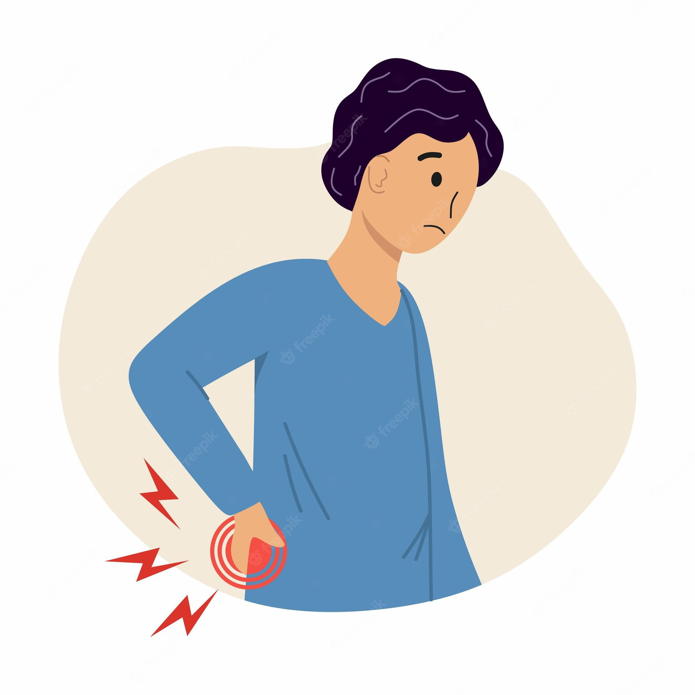

BODYPAINS
Body aches are a common symptom of many conditions. The flu is one of the most well-known conditions that can cause body aches. Aches can also be caused by your everyday life, especially if you stand, walk, or exercise for long periods of time.
You may just need rest and some treatment at home to relieve your body aches. But some aches, especially ones that last a long time, may mean that you have an underlying condition. In these cases, you may need to see your doctor for a diagnosis. They can create a long-term treatment plan to can relieve your aches and other associated symptoms.

SYMPTOMS
1. Stress
When you’re stressed out, your immune system can’t control its response to inflammation as well. As a result, your body can’t fight off infections or sickness as well as it usually can. This can cause your body to ache as it becomes more susceptible to inflammation and infection throughout your body.
2. Dehydration
Water is an essential ingredient for your body’s normal and healthy functioning. Without it, your body can’t properly perform many of its important processes, including breathing and digestion. When you become dehydrated and these processes don’t work well, you can feel physical pain as a result.
3. Lack of sleep
Not getting enough sleep can impact your overall health. You need at least 6 to 8 hours of sleep every night, including the rapid eye movement (REM) sleep. Your body’s tissues and cells need proper sleep to stay healthy, and your brain needs it to stay refreshed and alert. Without it, your body doesn’t have the time to rest and replenish essential energies and processes. This can lead to pain.
4. Cold or flu
A cold and the flu are both viral infections that cause inflammation. These infections attack your body, and your immune system attempts to fight them off. Inflammation, especially in your throat, chest, and lungs, can be painful. The rest of your body might ache, too, as your body works hard to fight the infection.
5. Anemia
Anemia happens when your body doesn’t have enough properly functioning red blood cells, so your body tissues can’t get enough oxygen. With anemia, many parts of your body can feel fatigued because they don’t get enough oxygen to remain healthy or to function properly.
6. Vitamin D deficiency
Hypocalcemia, or a low blood calcium level, can happen when you don’t have enough vitamin D in your body. Many of your body’s important organs, such as your kidneys and muscles, rely on calcium to work properly. Your bones also need calcium to stay healthy. Without enough vitamin D to help you absorb calcium, you can feel aching in these organs and in your bones.
REMEDIES
Ayurveda Products for Joint and Muscle Pain :
1.Shunthi (Dry Ginger Powder)
Ginger is packed with numerous flavonoid antioxidants and potent anti-inflammatory components, which efficiently relax the restricted muscles in the lower legs. Drinking a glass of warm water with 2 teaspoons of shunthi i.e. dry ginger powder and a dash of honey offers instantaneous relief from muscle cramps.
2.Snehana (Oil Therapy)
The external remedy of a soothing oil massage i.e. snehana is one of the best methods to cure muscular strain in the thighs and legs. Applying ashwagandha or chandana infused taila or oils and rubbing it into the sore muscles unwinds the knots and diminishes tenderness in the area.
3.Herbal combinations:
Ayurveda offers a range of wonderful herbal combinations for joints, muscles and associated structure. In India, people prefer Ayurveda over other systems of medicine when it comes to these issues.
4. Specific therapeutic massage treatments:
Various massage techniques are advised to help with lubrication of joints and ease muscle tension. Kati basti, Griva basti, Kizhi/pouch massages are examples. Use of herbalized oil improves efficacy by many folds. Multiple sessions may be required to get long lasting results.
Ayurvedic Treatment for Back Pain :
1.Abhyanga (massage done by warm medicated oil) is an Ayurvedic treatment for back pain that provides relief from back pain by balancing the doshas. Kati Vasti is also another Ayurvedic method of treating lower back pain.
2.It is recommended to avoid refrigerated food and drinks and to consume only warm, sour, and salty foods to pacify vitiated Vata.
3.Regular back stretching exercises: Exercising keeps us active, boosts our mobility and helps our body organs remain healthy. By doing back stretching exercises on a regular basis, you can ensure that your back is in good health
4.Massage therapy: A number of massage therapies ranging from self massage to a medicated massage performed by professionals at the Ayurvedagram retreat can help you improve your back’s condition and also maintain it.
TRY AN ALL-NATURAL PAIN REMEDY :
1. SYSTEMATIC RELAXATION
The next time you’re inclined to pop a pill for your symptoms, spend 10 minutes doing a systematic relaxation in shavasana (corpse pose) instead. This practice can reduce muscle spasms, relieve tension, and calm the mind naturally.
2. MASSAGE
In the ayurvedic tradition, regular oil massage, or snehana, is revered as a highly effective form of therapy for all sorts of ailments. Massage helps reduce pain because it tames vata, allays joint and muscle stiffness, increases circulation, mobilizes toxins, and relaxes the body. Find a qualified therapist to work with once a month. (Once a week would be even better.) If money is tight, simply give yourself an oil massage daily.
3. DIET
Food is a powerful healer, too. Follow a vata-pacifying diet of warm, moist, mildly spiced, nourishing foods for a month and see if it makes a difference. The sweet, salty, and sour tastes are all vata pacifying—just make sure you find natural, healthy sources of sweets (like ripe plums, pears, or dates) and don’t overdo. Overeating aggravates vata.
4. GENTLE ASANA
Pain can discourage us from stretching and moving the way we normally do, but restricting your movement will only compound the problem. Toxins accumulate where there is stagnation and congestion in the body, and this causes pain. Contracting and relaxing our muscles with gentle asanas relieves the stagnation by mobilizing blood, lymph, and synovial fluid. Even 15 minutes of stretching every morning or evening will make a world of difference.
5. AROMATHERAPY
Studies show that the essential oils of rosemary and thyme increase blood flow to muscles and create warmth, while peppermint and myrtle have temporary painkilling effects. Sprinkle a few drops into an aromatherapy diffuser, a hot bath, or your massage oil—and enjoy. (If you’re using essential oils on your skin, test first before applying broadly.)
6. HERBS
Turmeric and ginger help reduce inflammatory pain, while valerian, kava kava, chamomile, skullcap, passionflower, hops, and jatamansi (the “Indian valerian”) help combat tension-related pain. And since chronic pain is often a combination of inflammation and tension, these herbs are often sold in combination formulas. They’re available online and at many health-food stores.
HEALTHY SPIRITS is optimized for learning.Remidies might be simplified to improve reading and basic understanding. Tutorials, references, and examples are constantly reviewed to avoid errors, but we cannot warrant full correctness of all content. While using this site, you agree to have read and accepted our terms of use, cookie and privacy policy.
Copyright 1999-2022 by Refsnes Data. All Rights Reserved.